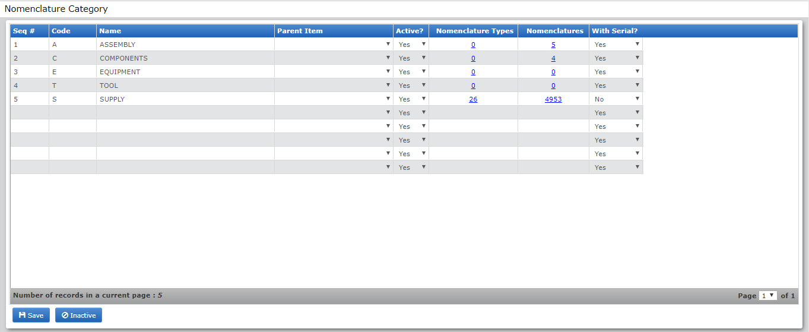
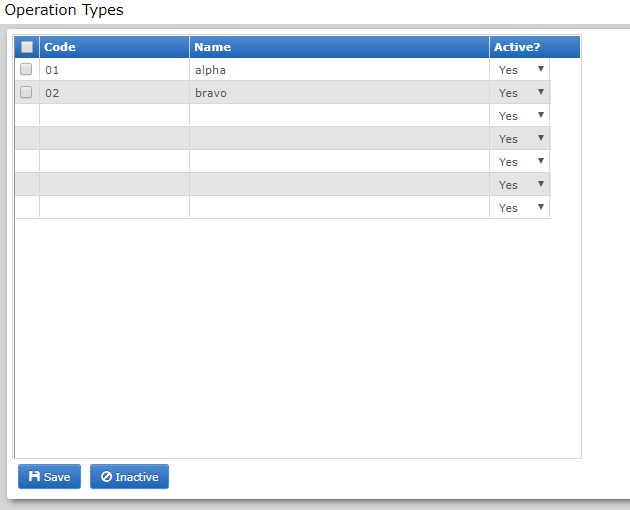

MANAGE ► MANUFACTURERS
Module Name: Manufacturer
Description: Manage Manufacturer
Program Flow:
» Click from the Menu, then select the  under the Manage Sub-menu to open the Manufacturer Page.
under the Manage Sub-menu to open the Manufacturer Page.

MANAGE ► DEALERS
Module Name: Dealers
Description: Manage Dealers
Program Flow:
» Click from the Menu, then select the  under the Manage Sub-menu to open the Manufacturer Page.
under the Manage Sub-menu to open the Manufacturer Page.

MANAGE ► SUPPLY SOURCES
Module Name: Supply Sources
Description: Manage Supply Sources
Program Flow:
» Click from the Menu, then select the  under the Manage Sub-menu to open the Manufacturer Page.
under the Manage Sub-menu to open the Manufacturer Page.

MANAGE ► ORGANIZATION GROUPS
Module Name: Organization Group
Description: Manage Organization Group Test Page
Program Flow:
» Click from the Menu, then select the  under the Manage Sub-menu to open the Manufacturer Page.
under the Manage Sub-menu to open the Manufacturer Page.

MANAGE ► ORGANIZATION
Module Name: Organization
Description: Manage Organization Page
Program Flow:
» Click from the Menu, then select the  under the Manage Sub-menu to open the Organization Group Test Page.
under the Manage Sub-menu to open the Organization Group Test Page.

# of Command Window

# of Wing Window

MANAGE ► SQUADRON TYPES
Module Name: Squadron Type
Description: Manage Squadron Type Page
Program Flow:
» Click from the Menu, then select the  under the Manage Sub-menu to open the Organization Group Test Page.
under the Manage Sub-menu to open the Organization Group Test Page.

MANAGE ► STATUSES
Module Name: Statuses
Description: Manage Statuses
» Click from the Menu, then select the  under the Manage Sub-menu to open the Statuses Page.
under the Manage Sub-menu to open the Statuses Page.

MANAGE ► DESIGNATIONS
Module Name: Designation
Description: Manage Designation Page
» Click from the Menu, then select the  under the Manage Sub-menu to open the Position Page.
under the Manage Sub-menu to open the Position Page.

MANAGE ► EMPLOYEES
Module Name: Employees
Description: Manage Employees
Program Flow:
» Click from the Menu, then select the  under the Manage Sub-menu to open the Manufacturer Page.
under the Manage Sub-menu to open the Manufacturer Page.


MANAGE ► UNIT OF MEASURE
Module Name: Unit of Measure
Description: Manage Unit of Measure
» Click from the Menu, then select the  under the Manage Sub-menu to open the Unit of Measure Page.
under the Manage Sub-menu to open the Unit of Measure Page.

MANAGE ► MONITORING TYPES
Module Name: Monitoring Types
Description: Manage Monitoring Types
» Click from the Menu, then select the  under the Manage Sub-menu to open the Unit of Monitoring Types Page.
under the Manage Sub-menu to open the Unit of Monitoring Types Page.

MANAGE ► SET-UP NOMENCLATURE
Module Name: Set-up Nomenclature
Description: Manage Set-up Nomenclature
» Click from the Menu, then select the  under the Manage Sub-menu to open the Nomenclature Category Page.
under the Manage Sub-menu to open the Nomenclature Category Page.

MANAGE ► TYPES OF ADJUSTMENT
Module Name: Types of Adjustment
Description: Manage Types of Adjustment
» Click from the Menu, then select the under the Manage Sub-menu to open the Adjustment Types Page.

MANAGE ► FLIGHT OPERATION TYPES
Module Name: Flight operation types
Description: Manage Flight operation types
» Click from the Menu, then select the  under the Manage Sub-menu to open the Operation Types Page.
under the Manage Sub-menu to open the Operation Types Page.

MANAGE ► ORIGIN
Module Name: Origin
Description: Manage Origin Page
» Click from the Menu, then select the  under the Manage Sub-menu to open the Unit of Items Page.
under the Manage Sub-menu to open the Unit of Items Page.

MANAGE ► AIRCRAFT CLASS
Module Name: Aircraft Class
Description: Manage Aircraft Class Page
» Click from the Menu, then select the  under the Manage Sub-menu to open the Unit of Items Page.
under the Manage Sub-menu to open the Unit of Items Page.

MANAGE ► AIRCRAFT ROLES
Module Name: Aircraft Roles
Description: Manage Aircraft Role Page
» Click from the Menu, then select the  under the Manage Sub-menu to open the Unit of Items Page.
under the Manage Sub-menu to open the Unit of Items Page.

MANAGE ► AIRCRAFT TYPES
Module Name: Aircraft Types
Description: Manage Aircraft Types Page
» Click from the Menu, then select the  under the Manage Sub-menu to open the Unit of Items Page.
under the Manage Sub-menu to open the Unit of Items Page.

MANAGE ► AIRCRAFT INFORMATION
Module Name: Aicraft Information
Description: Manage Aicraft Information Page
» Click from the Menu, then select the  under the Manage Sub-menu to open the Unit of Items Page.
under the Manage Sub-menu to open the Unit of Items Page.

MANAGE ► MISSION SYMBOLS
Module Name: Mission Symbols
Description: Manage Mission Symbols Page
» Click from the Menu, then select the  under the Manage Sub-menu to open the Mission Symbols Page.
under the Manage Sub-menu to open the Mission Symbols Page.

MANAGE ► STATIONS
Module Name: Stations
Description: Manage Station Page
» Click from the Menu, then select the  under the Manage Sub-menu to open the Stations Page.
under the Manage Sub-menu to open the Stations Page.

MANAGE ► RANKS
Module Name: Ranks
Description: Manage Ranks Page
» Click from the Menu, then select the  under the Manage Sub-menu to open the Ranks Page.
under the Manage Sub-menu to open the Ranks Page.

MANAGE ► DESIGNATIONS/POSITIONS
Module Name: Designations/Positions
Description: Manage Designations/Positions Page
» Click from the Menu, then select the  under the Manage Sub-menu to open the Designations/Positions Page.
under the Manage Sub-menu to open the Designations/Positions Page.